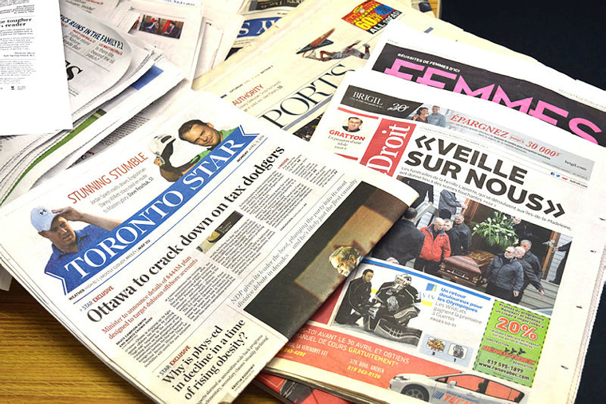

How does the news cycle work during a campaign?

Source: The Hill Times
As mentioned in Ryan Holiday’s book, Trust Me I’m Lying, during election periods, traffic on news sites goes up. Since they have infinite space to fill and need to keep publishing, a lot more information than necessary can get produced. This is great for anyone seeking to convey a message, like a political candidate. While the traditional role of the media is to inform the public so they can participate in a democracy, when it comes to news during a campaign, less is more. Follow less breaking news and be patient with developing stories. Consider alternative perspectives and what the motive of a source is. Moreover, ask yourself why the information you’re getting matters to begin with.